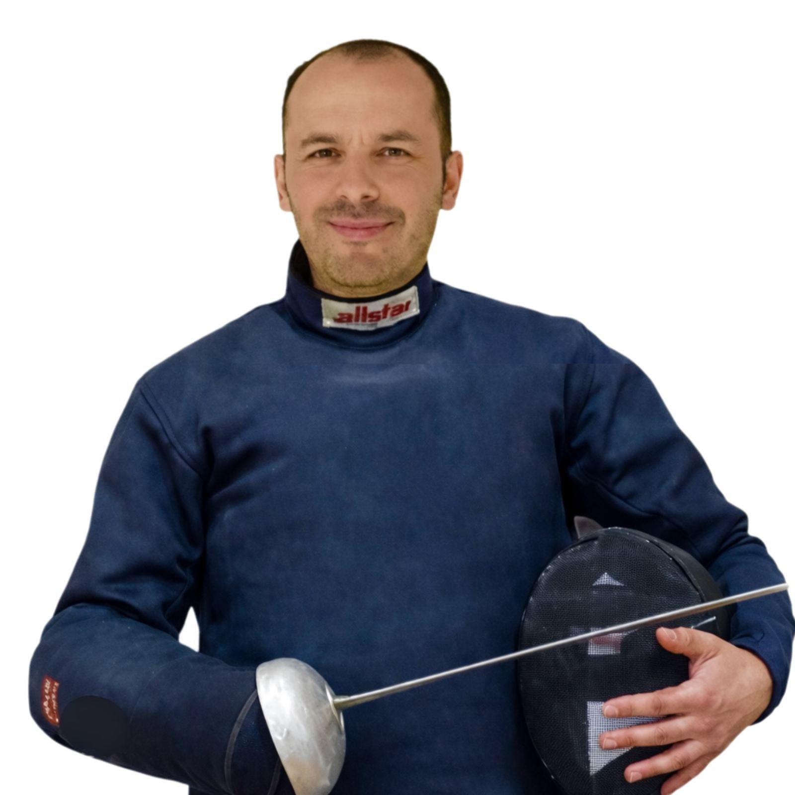
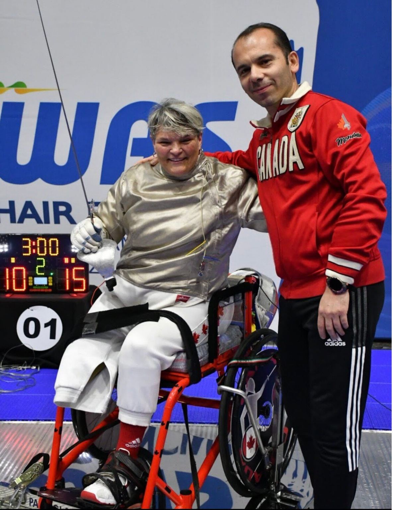

International Schools
Program design, school fencing development and long-term pathways.
International Fencing Coach · FIE Master Coach
Coaching champions. Building programs. Developing the next generation.
With nearly four decades in fencing and more than 30 years of international coaching experience, Coach Yousef Alaghehband has coached athletes and developed fencing programs across five continents.
His work extends beyond individual coaching — developing champions, establishing and growing fencing programs, educating coaches, and building international collaborations between schools, clubs, academies and sports organizations.

Schools · Universities · After-School Programs
From introductory experiences to structured after-school programs, university projects and long-term team development, each program is shaped around the institution, age group, available space and development goals.
Discuss a School or University Program →

Program Development
Strong school programs combine safe progression, engaging training, clear skill milestones and the possibility to grow from first experience to competition. The goal is a program that can become part of a school’s sporting identity.

Career
FIE Master Coach. Former National Coach — Canadian Para Fencing Team. International Referee. Founder & Head Coach — Silversword Fencing Academy, Montréal.
His experience spans the full athlete-development pathway — from kindergarten and school programs to university, high performance and international competition.
Explore athlete development →International Coaching · Italy
International work has included athlete development, training camps, coach collaboration and high-performance environments with fencing communities across Europe, Asia, North America and beyond.

Champions & Athlete Development
Technical detail, decision-making, confidence and competition habits are developed over time — from a young athlete’s first events to advanced performance environments.

Young athletes need more than results. They need repeatable habits, sound technique, confidence under pressure and a clear understanding of how to keep improving.
Competition moments matter because they reveal what training has created — and what the next stage of development should address.

Para Fencing
Former National Coach — Canadian Para Fencing Team, with international experience in wheelchair fencing, athlete development and competition environments.
Discuss Para Fencing Projects


Global Experience


Competition Environment
Competition coaching is not about adding noise. It is about helping athletes read the moment, manage pressure and execute the work they have prepared.
International Network
Selected institutional names and approved logos can be added after launch.
Open to International Collaboration
Program design, school fencing development and long-term pathways.
Club development, coach education and performance structures.
International camps, intensives and athlete-development projects.
Competition preparation and advanced athlete development.
Technical workshops, coach mentoring and knowledge transfer.
Selected collaborations with schools, academies and sports organizations.

Athlete Development
Medals and certificates capture a moment. The deeper value is the process behind them: preparation, discipline, tactical growth, confidence and the ability to learn from every bout.
Articles
Coaching, épée, athlete development, footwork, high performance, para fencing and international program building.
From first touch to high-performance competition.
Decision-making, timing, distance and pressure.
Adaptation, precision and performance under constraint.
FAQ
Everything you need to know about training, programs, and international collaboration.
Programs are available for beginners, young athletes, competitive fencers, schools, fencing clubs, academies, and high-performance athletes. Training is adapted to each participant’s age, experience, and goals.
No. Complete beginners are welcome. Coach Yousef provides structured, step-by-step instruction, while experienced athletes receive more advanced and performance-focused training.
Yes. You do not need to have started fencing as a child. Training can be adapted to your fitness level, previous experience, and personal goals.
Programs include school fencing, after-school activities, training camps, private lessons, competitive preparation, high-performance training, coach education, and international fencing projects.
Yes. Customized programs can be developed for international schools and universities, including curriculum-based lessons, after-school programs, fencing clubs, demonstrations, camps, staff workshops, and team development.
Yes. Private lessons are available for beginners and experienced athletes seeking personalized technical development, tactical improvement, competition preparation, or faster progress. Please contact Coach Yousef to discuss availability and location.
Yes. Advanced training may include performance analysis, distance management, timing, tactical decision-making, technical refinement, competition strategy, and other high-level aspects of fencing. Each program is designed around the athlete’s individual needs and competitive goals.
Yes. Coach Yousef offers short-term, holiday, international, and high-performance fencing camps. Each camp can be customized according to the athletes’ age, experience, level, and objectives.
Yes. High-performance programs may include technical and tactical development, footwork, bout analysis, physical preparation, mental readiness, and competition strategy.
Yes. Coach Yousef is a former Canadian National Para Fencing Team Coach with extensive international experience in Para Fencing coaching and refereeing. He is available to discuss athlete training, program development, and cooperation with clubs and organizations. More information is available in the dedicated Para Fencing section.
Equipment availability depends on the program and location. For school programs, camps, workshops, and introductory sessions, equipment requirements and arrangements can be discussed in advance.
Training is structured around safety, correct equipment, age-appropriate instruction, discipline, respect, encouragement, and proper fencing etiquette. Safety must remain a priority in every session.
Yes. Coach Yousef is available for selected international school programs, fencing camps, club development, high-performance projects, coach education, workshops, and international partnerships.
Complete the website contact form or contact Coach Yousef through the available contact channels. Please include your location, preferred dates, the participant’s age and fencing experience, and the type of program you are interested in.
International Collaboration
For selected projects with schools, academies, clubs and sports organizations.
Start a Conversation